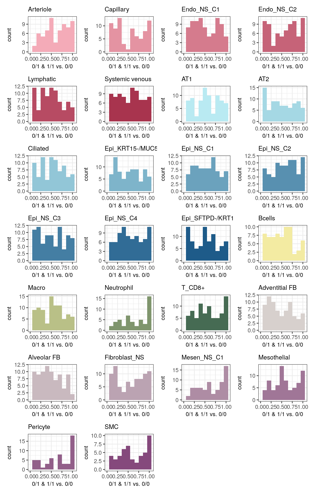
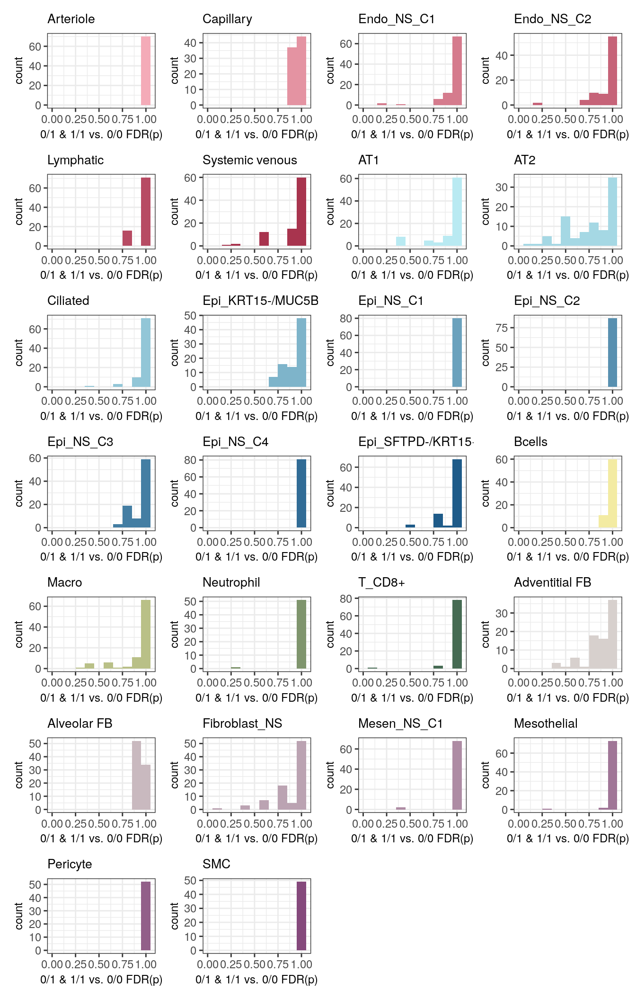
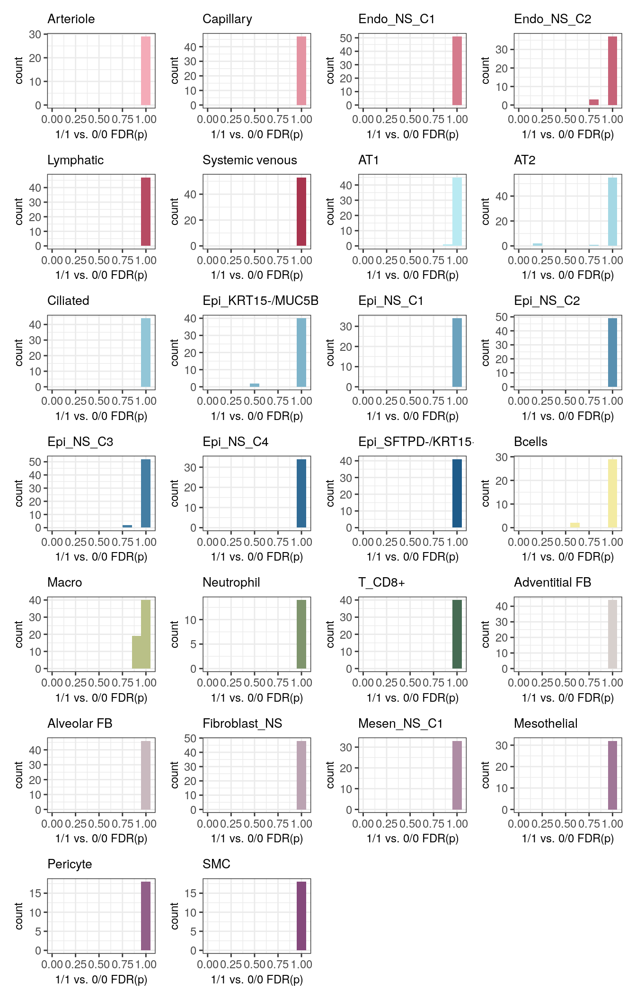

Plotting ASE results
heinin
2023-12-26
Last updated: 2024-01-02
Checks: 5 2
Knit directory: ILD_ASE_Xenium/
This reproducible R Markdown analysis was created with workflowr (version 1.7.1). The Checks tab describes the reproducibility checks that were applied when the results were created. The Past versions tab lists the development history.
The R Markdown file has unstaged changes. To know which version of
the R Markdown file created these results, you’ll want to first commit
it to the Git repo. If you’re still working on the analysis, you can
ignore this warning. When you’re finished, you can run
wflow_publish to commit the R Markdown file and build the
HTML.
Great job! The global environment was empty. Objects defined in the global environment can affect the analysis in your R Markdown file in unknown ways. For reproduciblity it’s best to always run the code in an empty environment.
The command set.seed(20231206) was run prior to running
the code in the R Markdown file. Setting a seed ensures that any results
that rely on randomness, e.g. subsampling or permutations, are
reproducible.
Great job! Recording the operating system, R version, and package versions is critical for reproducibility.
Nice! There were no cached chunks for this analysis, so you can be confident that you successfully produced the results during this run.
Using absolute paths to the files within your workflowr project makes it difficult for you and others to run your code on a different machine. Change the absolute path(s) below to the suggested relative path(s) to make your code more reproducible.
| absolute | relative |
|---|---|
| /home/hnatri/ILD_ASE_Xenium/ | . |
| /home/hnatri/ILD_ASE_Xenium/code/colors_themes.R | code/colors_themes.R |
| /home/hnatri/ILD_ASE_Xenium/code/plot_functions.R | code/plot_functions.R |
| /home/hnatri/ILD_ASE_Xenium/code/utilities.R | code/utilities.R |
Great! You are using Git for version control. Tracking code development and connecting the code version to the results is critical for reproducibility.
The results in this page were generated with repository version 6b9ca2a. See the Past versions tab to see a history of the changes made to the R Markdown and HTML files.
Note that you need to be careful to ensure that all relevant files for
the analysis have been committed to Git prior to generating the results
(you can use wflow_publish or
wflow_git_commit). workflowr only checks the R Markdown
file, but you know if there are other scripts or data files that it
depends on. Below is the status of the Git repository when the results
were generated:
Unstaged changes:
Modified: analysis/ASE.Rmd
Modified: analysis/endo_mesen_annotations.Rmd
Modified: analysis/epithelial_annotations.Rmd
Modified: analysis/immune_annotations.Rmd
Modified: analysis/post_annotation_visualization.Rmd
Modified: analysis/visualize_ASE.Rmd
Modified: code/colors_themes.R
Note that any generated files, e.g. HTML, png, CSS, etc., are not included in this status report because it is ok for generated content to have uncommitted changes.
These are the previous versions of the repository in which changes were
made to the R Markdown (analysis/visualize_ASE.Rmd) and
HTML (docs/visualize_ASE.html) files. If you’ve configured
a remote Git repository (see ?wflow_git_remote), click on
the hyperlinks in the table below to view the files as they were in that
past version.
| File | Version | Author | Date | Message |
|---|---|---|---|---|
| Rmd | 6b9ca2a | heinin | 2023-12-27 | Added scripts for quantifying allelic bias |
| html | 6b9ca2a | heinin | 2023-12-27 | Added scripts for quantifying allelic bias |
Packages and environment variables
suppressPackageStartupMessages({library(cli)
library(Seurat)
library(SeuratObject)
library(SeuratDisk)
library(tidyverse)
library(tibble)
library(plyr)
library(dplyr)
library(ggplot2)
library(ggpubr)
library(ggrepel)
library(workflowr)
library(googlesheets4)
library(VariantAnnotation)})
setwd("/home/hnatri/ILD_ASE_Xenium/")
set.seed(9999)
options(ggrepel.max.overlaps = Inf)
# Colors, themes, cell type markers, and plot functions
source("/home/hnatri/ILD_ASE_Xenium/code/colors_themes.R")
source("/home/hnatri/ILD_ASE_Xenium/code/plot_functions.R")
source("/home/hnatri/ILD_ASE_Xenium/code/utilities.R")
# Cell type annotations
gs4_deauth()
ct_annot <- gs4_get("https://docs.google.com/spreadsheets/d/1SDfhxf6SjllxXEtNPf32ZKTEqHC9QJW3BpRYZFhpqFE/edit?usp=sharing")
sheet_names(ct_annot)
all_celltypes_annot <- read_sheet(ct_annot, sheet = "All celltypes, annotated, merged")Importing data
# Wilcoxon test results for allelic bias
ase_sigtest <- readRDS("/scratch/hnatri/ILD/ILD_spatial_ASE/ase_sigtest.rds")
# Plot order
plot_order <- all_celltypes_annot %>%
dplyr::select("lineage", "annotation_3") %>%
distinct() %>%
arrange(lineage, annotation_3) %>%
dplyr::select(annotation_3) %>% unlist() %>% as.character()
ase_sigtest <- ase_sigtest[plot_order]For each cell type, plotting the nominal p-value distribution
hist_list_1_2vs0 <- lapply(names(ase_sigtest), function(ct){
ggplot(ase_sigtest[[ct]], aes(x = p_1_2vs0, fill = celltype)) +
geom_histogram(binwidth = 0.1) +
xlim(0, 1.05) +
scale_fill_manual(values = annotation_3_col) +
xlab("0/1 & 1/1 vs. 0/0") +
ggtitle(ct) +
theme_bw() +
my_theme +
NoLegend()
})
hist_list_2vs0 <- lapply(names(ase_sigtest), function(ct){
ggplot(ase_sigtest[[ct]], aes(x = p_2vs0, fill = celltype)) +
geom_histogram(binwidth = 0.1) +
xlim(0, 1.05) +
scale_fill_manual(values = annotation_3_col) +
xlab("1/1 vs. 0/0") +
ggtitle(ct) +
theme_bw() +
my_theme +
NoLegend()
})
patchwork::wrap_plots(hist_list_1_2vs0, ncol = 4)
patchwork::wrap_plots(hist_list_2vs0, ncol = 4)
For each cell type, plotting the FDR-adjusted p-value distribution
hist_list_1_2vs0 <- lapply(names(ase_sigtest), function(ct){
ggplot(ase_sigtest[[ct]], aes(x = p_adj_1_2vs0, fill = celltype)) +
geom_histogram(binwidth = 0.1) +
xlim(0, 1.05) +
scale_fill_manual(values = annotation_3_col) +
xlab("0/1 & 1/1 vs. 0/0 FDR(p)") +
ggtitle(ct) +
theme_bw() +
my_theme +
NoLegend()
})
hist_list_2vs0 <- lapply(names(ase_sigtest), function(ct){
ggplot(ase_sigtest[[ct]], aes(x = p_adj_2vs0, fill = celltype)) +
geom_histogram(binwidth = 0.1) +
xlim(0, 1.05) +
scale_fill_manual(values = annotation_3_col) +
xlab("1/1 vs. 0/0 FDR(p)") +
ggtitle(ct) +
theme_bw() +
my_theme +
NoLegend()
})
patchwork::wrap_plots(hist_list_1_2vs0, ncol = 4)
patchwork::wrap_plots(hist_list_2vs0, ncol = 4)
Examining the most significant loci
# Subsetting significant loci
ase_sig <- lapply(names(ase_sigtest), function(ct){
ase_sigtest[[ct]] %>% filter(p_adj_1_2vs0 <= 0.05 | p_adj_2vs0 <= 0.05)
})
ase_sig <- do.call("rbind", ase_sig)
ase_sig p_2vs0 p_1_2vs0 p_adj_2vs0 p_adj_1_2vs0 celltype
KANSL1_rs542050069 NA 9.805924e-05 NA 0.004755873 AT2
KANSL1_rs549599956 0.1116515 7.150431e-05 1 0.004755873 AT2
NFKB1_rs35726481 0.1475899 9.181774e-04 1 0.029687736 AT2Plotting allelic bias
Importing allelic bias and genotype data
ase_res <- readRDS("/scratch/hnatri/ILD/ILD_spatial_ASE/ase_res.rds")
gt_data <- as.matrix(read.csv("/scratch/hnatri/ILD/ILD_spatial_ASE/gt_data.csv", row.names = "X"))Comparing to ct-eQTL results
sessionInfo()R version 4.3.0 (2023-04-21)
Platform: x86_64-pc-linux-gnu (64-bit)
Running under: Ubuntu 22.04.2 LTS
Matrix products: default
BLAS: /usr/lib/x86_64-linux-gnu/openblas-pthread/libblas.so.3
LAPACK: /usr/lib/x86_64-linux-gnu/openblas-pthread/libopenblasp-r0.3.20.so; LAPACK version 3.10.0
locale:
[1] LC_CTYPE=en_US.UTF-8 LC_NUMERIC=C
[3] LC_TIME=en_US.UTF-8 LC_COLLATE=en_US.UTF-8
[5] LC_MONETARY=en_US.UTF-8 LC_MESSAGES=en_US.UTF-8
[7] LC_PAPER=en_US.UTF-8 LC_NAME=C
[9] LC_ADDRESS=C LC_TELEPHONE=C
[11] LC_MEASUREMENT=en_US.UTF-8 LC_IDENTIFICATION=C
time zone: Etc/UTC
tzcode source: system (glibc)
attached base packages:
[1] grid stats4 stats graphics grDevices utils datasets
[8] methods base
other attached packages:
[1] ComplexHeatmap_2.16.0 RColorBrewer_1.1-3
[3] viridis_0.6.3 viridisLite_0.4.2
[5] ggthemes_5.0.0 VariantAnnotation_1.46.0
[7] Rsamtools_2.16.0 Biostrings_2.68.1
[9] XVector_0.40.0 SummarizedExperiment_1.30.2
[11] Biobase_2.60.0 GenomicRanges_1.52.0
[13] GenomeInfoDb_1.36.0 IRanges_2.34.0
[15] S4Vectors_0.38.1 MatrixGenerics_1.12.3
[17] matrixStats_1.0.0 BiocGenerics_0.46.0
[19] googlesheets4_1.1.0 workflowr_1.7.1
[21] ggrepel_0.9.3 ggpubr_0.6.0
[23] plyr_1.8.8 lubridate_1.9.2
[25] forcats_1.0.0 stringr_1.5.0
[27] dplyr_1.1.2 purrr_1.0.1
[29] readr_2.1.4 tidyr_1.3.0
[31] tibble_3.2.1 ggplot2_3.4.2
[33] tidyverse_2.0.0 SeuratDisk_0.0.0.9021
[35] Seurat_4.9.9.9048 SeuratObject_4.9.9.9084
[37] sp_1.6-1 cli_3.6.1
loaded via a namespace (and not attached):
[1] fs_1.6.2 spatstat.sparse_3.0-1 bitops_1.0-7
[4] doParallel_1.0.17 httr_1.4.6 tools_4.3.0
[7] sctransform_0.3.5 backports_1.4.1 utf8_1.2.3
[10] R6_2.5.1 lazyeval_0.2.2 uwot_0.1.14
[13] GetoptLong_1.0.5 withr_2.5.0 prettyunits_1.1.1
[16] gridExtra_2.3 progressr_0.13.0 spatstat.explore_3.2-1
[19] fastDummies_1.6.3 labeling_0.4.2 sass_0.4.6
[22] spatstat.data_3.0-1 ggridges_0.5.4 pbapply_1.7-0
[25] parallelly_1.36.0 BSgenome_1.68.0 rstudioapi_0.14
[28] RSQLite_2.3.1 shape_1.4.6 generics_0.1.3
[31] BiocIO_1.10.0 ica_1.0-3 spatstat.random_3.1-5
[34] car_3.1-2 Matrix_1.5-4.1 fansi_1.0.4
[37] abind_1.4-5 lifecycle_1.0.3 whisker_0.4.1
[40] yaml_2.3.7 carData_3.0-5 BiocFileCache_2.8.0
[43] Rtsne_0.16 blob_1.2.4 promises_1.2.0.1
[46] crayon_1.5.2 miniUI_0.1.1.1 lattice_0.21-8
[49] cowplot_1.1.1 GenomicFeatures_1.52.2 KEGGREST_1.40.0
[52] pillar_1.9.0 knitr_1.43 rjson_0.2.21
[55] future.apply_1.11.0 codetools_0.2-19 leiden_0.4.3
[58] glue_1.6.2 getPass_0.2-2 data.table_1.14.8
[61] vctrs_0.6.2 png_0.1-8 spam_2.9-1
[64] cellranger_1.1.0 gtable_0.3.3 cachem_1.0.8
[67] xfun_0.39 S4Arrays_1.0.4 mime_0.12
[70] survival_3.5-5 gargle_1.4.0 iterators_1.0.14
[73] ellipsis_0.3.2 fitdistrplus_1.1-11 ROCR_1.0-11
[76] nlme_3.1-162 bit64_4.0.5 progress_1.2.2
[79] filelock_1.0.3 RcppAnnoy_0.0.20 rprojroot_2.0.3
[82] bslib_0.4.2 irlba_2.3.5.1 KernSmooth_2.23-21
[85] colorspace_2.1-0 DBI_1.1.3 tidyselect_1.2.0
[88] processx_3.8.1 bit_4.0.5 compiler_4.3.0
[91] curl_5.0.0 git2r_0.32.0 hdf5r_1.3.8
[94] xml2_1.3.4 DelayedArray_0.26.7 plotly_4.10.2
[97] rtracklayer_1.60.0 scales_1.2.1 lmtest_0.9-40
[100] callr_3.7.3 rappdirs_0.3.3 digest_0.6.31
[103] goftest_1.2-3 spatstat.utils_3.0-3 rmarkdown_2.22
[106] htmltools_0.5.5 pkgconfig_2.0.3 highr_0.10
[109] dbplyr_2.3.2 fastmap_1.1.1 GlobalOptions_0.1.2
[112] rlang_1.1.1 htmlwidgets_1.6.2 shiny_1.7.4
[115] farver_2.1.1 jquerylib_0.1.4 zoo_1.8-12
[118] jsonlite_1.8.5 BiocParallel_1.34.2 RCurl_1.98-1.12
[121] magrittr_2.0.3 GenomeInfoDbData_1.2.10 dotCall64_1.0-2
[124] patchwork_1.1.2 munsell_0.5.0 Rcpp_1.0.10
[127] reticulate_1.34.0 stringi_1.7.12 zlibbioc_1.46.0
[130] MASS_7.3-60 parallel_4.3.0 listenv_0.9.0
[133] deldir_1.0-9 splines_4.3.0 tensor_1.5
[136] circlize_0.4.15 hms_1.1.3 ps_1.7.5
[139] igraph_1.4.3 spatstat.geom_3.2-1 ggsignif_0.6.4
[142] RcppHNSW_0.4.1 reshape2_1.4.4 biomaRt_2.56.1
[145] XML_3.99-0.14 evaluate_0.21 foreach_1.5.2
[148] tzdb_0.4.0 httpuv_1.6.11 RANN_2.6.1
[151] polyclip_1.10-4 clue_0.3-64 future_1.32.0
[154] scattermore_1.1 broom_1.0.4 xtable_1.8-4
[157] restfulr_0.0.15 RSpectra_0.16-1 rstatix_0.7.2
[160] later_1.3.1 googledrive_2.1.0 GenomicAlignments_1.36.0
[163] memoise_2.0.1 AnnotationDbi_1.62.1 cluster_2.1.4
[166] timechange_0.2.0 globals_0.16.2